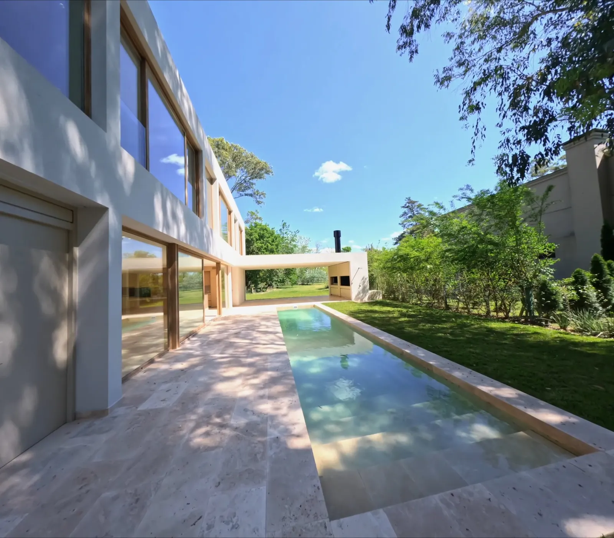

Visita técnica
Recorremos la propiedad, estudiamos orientación, horarios de luz, accesos y obstáculos.

PortfolioProducciones 2024 — 2026
Cine aéreo y FPV para propiedades de autor. Recorridos que entienden la casa antes de mostrarla.
RecorrerLa fachada se presenta despacio, como una primera frase.
Entre el jardín y los árboles, la casa se abre.
Residencia Los Robles
Pilar, Buenos Aires — 2026(01) Enfoque
Filmamos propiedades como se filma arquitectura: con paciencia, luz natural y un recorrido pensado de antemano. Cada toma tiene una intención. Cada segundo, un motivo.
No hacemos videos de inmobiliaria. Hacemos piezas que se sostienen solas: planos continuos, movimientos lentos y una lectura honesta de los materiales, la escala y la luz.
Trabajamos con estudios de arquitectura, desarrolladoras y propietarios que entienden que la forma de mostrar una casa también dice algo de ella.




Seis fotogramas · un solo plano00:00:07:10 total
(03) Servicios
Un plano secuencia continuo que atraviesa la propiedad: exterior, umbral e interior, sin cortes.
Contexto, entorno, orientación y escala. La casa en su lugar, antes del primer detalle.
Cenitales y oblicuas editadas para catálogo, prensa y presentación a inversores.
Cortes 9:16 con ritmo propio para redes. Pensados en vertical desde el rodaje, no recortados.
Próxima secuencia
(04) Método
Recorremos la propiedad, estudiamos orientación, horarios de luz, accesos y obstáculos.
Definimos el recorrido plano por plano: qué se ve, en qué orden y a qué velocidad.
Una jornada en la franja de luz elegida. Varias pasadas por plano hasta lograr la toma limpia.
Estabilización, corrección de color y música. Entrega en 16:9 y 9:16 en cinco días hábiles.
(05) Índice de obras
06 producciones
“Entendió la casa mejor que muchas fotos que tenemos de ella. El recorrido se siente exactamente como entrar.”
(06) Contacto